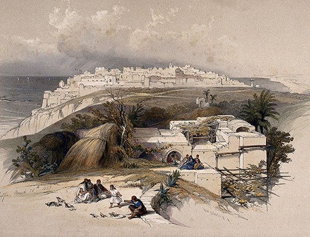
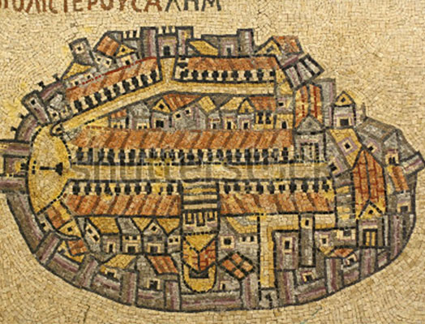
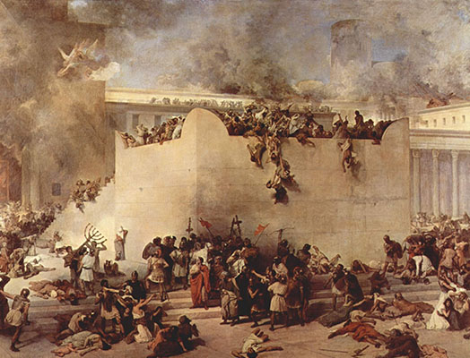
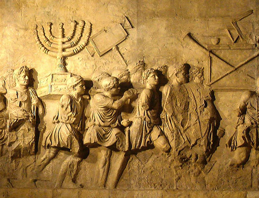

Yonatan was born in the city of Jaffa in the kingdom of Judea, which was part of the Roman Empire. Growing up, he saw tensions rise between Jews and Roman rulers who restricted Jewish autonomy and began looting their holy sites. He saw family members take up arms and riot against the unjust conditions and heard stories of brave Jewish warriors who stood up to Romans.

When Yonatan was 12, his father was killed by Romans so he fled with his Mother to Jerusalem. Yonatan was brave but when the Romans laid seige to Jerusalem and the Jewish zealots ruined any hopes for negotiation.
Eventually, the Romans sacked Jerusalem. They slaughtered thousands of inhabitants and destroyed everything that was sacred to the Jews. Yonatan was captured by Romans. He was too young to be executed so they sold him into slavery. He felt lucky to be alive but ashamed that he had not died fighting for his peoples freedom.
A Roman aristocrat, seeing Yonatan's health and vigor, offered to buy him and train him as a gladiator. Yonatan was enrolled in gladiator school in Rome at the age of 16. He knew he would never see his family again. He had lost everything and he wanted to fight.